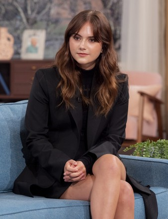

經歷

人物經歷
演藝經歷
- 2005年出演電視劇《神秘博士》在劇中飾演Cline
- 2011年艾米莉亞瓊斯正式以演員身分出道,演出電視劇《阿努比斯公寓》劇中飾演Young
- 2011年5月7日出演個人第一部電影《加勒比海盜驚濤怪浪》
- 2011年8月19日參演了電影《真愛挑日子One Day》飾演Jasmine
- 2012年9月參演電視劇《神秘博士第七季》在英國BBC1台和BBC美國同步首播
- 2013年出演電視劇《烏托邦第一季》在劇中飾演Alice Ward,於隔年出演《烏托邦第二季》
- 2015年主演了電視劇《狼廳》
- 2016年9月3日出演了由馬丁庫爾霍文執導的懸疑電影《走過煉獄的女人》電影在義大利上映,飾演Joanna
- 2018年3月14日,主演電影《惡夢娃娃屋》在法國上映
- 2018年11月9日參演的電影《我的冤家是條狗》在中國上映
- 2020年2月7日參演電視劇《致命鑰匙第一季》在美國首播
- 2021年1月29日,艾米莉亞瓊斯參演的電影《健聽女孩》在聖丹斯影展上映,並於8月13日在美國網路上映
- 2021年9月13日參演脫口秀《肥倫今夜秀第九季》在美國首播
- 2021年10月22日參演的電視劇《致命鑰匙第二季》在美國開播
- 2021年11月29日以《健聽女孩》獲得第31屆高譚獨立電影獎突破演員
- 2022年3月13日出席在英國舉辦的第75屆英國電影學院獎頒獎典禮
- 2022年3月27日出席在美國舉辦的第94屆奧斯卡頒獎典禮
- 2022年8月10日參演的電視劇《致命鑰匙第三季》在美國首播
- 2022年12月21日根據鳳凰網娛樂消息,首屆澳淶塢五大洲電影節金莉花獎獲獎名單在美國洛杉磯舉行的首屆世界電影產業大會上揭曉,憑藉《健聽女孩》榮獲全球最佳新人演員
- 2023年1月20日參演的電影《仙境》在聖丹斯影展上映
- 2023年1月20日參演電影《愛貓人》在聖丹斯電影節上映
人物經歷
得獎紀錄
- 2021-11 作品健聽女孩,第31屆高譚獨立電影獎突破演員獎得獎
- 2021-12 作品健聽女孩,第27屆評論家選擇獎電影類-最佳年輕演員獎提名
- 2022-2 作品健聽女孩,第75屆英國電影學院獎電影類-最佳女主角獎提名
- 2022-11.18 作品健聽女孩,第34屆華鼎獎全球最佳新人演員提名
- 2022-12 作品健聽女孩,首屆澳淶塢五大洲電影節全球最佳新人演員獎得獎